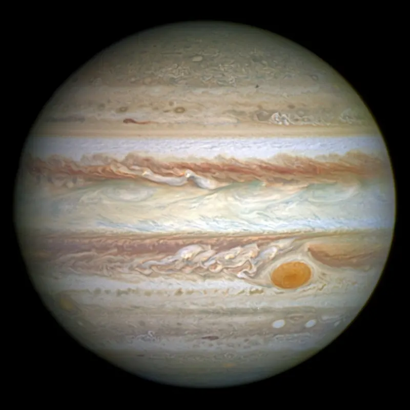
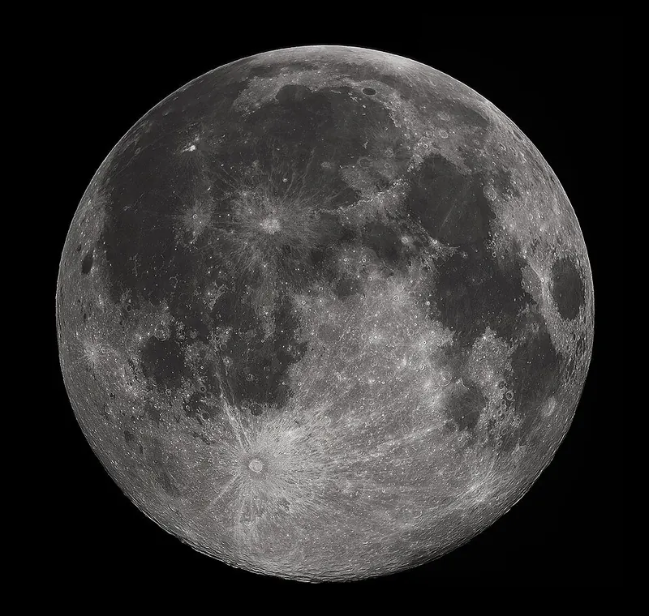

Cambridge Primary Checkpoint · Science 0097 · Stage 6 · Physics
Mass, Weight and Gravity
Mass is how much matter an object has (kg); weight is the pull of gravity on it (N). Learn the difference, how to measure each, and why your weight would change on the Moon but your mass would not.
British & IGCSE › Checkpoint 6 › Checkpoint 6 Science — Complete Course
- Describe the difference between mass, measured in kilograms (kg), and weight, measured in newtons (N). (6Pf.01)
- Describe what gravity does: when gravity changes (for example on the Moon), an object's weight changes but its mass stays the same. (6Pf.02)
1. Key words
| Word / phrase | Meaning / use |
|---|---|
| mass | الكتلة — the amount of matter (stuff) in an object; measured in kilograms (kg) or grams (g) |
| weight | الوزن — the force of gravity pulling on an object; measured in newtons (N) |
| gravity | الجاذبية — a pulling force between objects; the Earth pulls everything towards its centre |
| newton (N) | نيوتن — the unit of force, and so the unit of weight |
| kilogram (kg) | كيلوجرام — the unit of mass; 1 kg = 1000 g |
| forcemeter (newton meter) | الميزان الزنبركي — measures forces, including weight, in N |
| balance | الميزان — measures mass in g or kg |
| gravity in N/kg | شدة الجاذبية — how many newtons of weight each kilogram has in that place |
2. Mass
Mass is the amount of matter in an object — how much "stuff" it is made of. A brick has more mass than a sponge of the same size because it has more matter packed into it. Mass is measured in kilograms (kg) or grams (g) using a balance. Mass does not depend on where the object is: a 2 kg bag of rice has a mass of 2 kg in Cairo, on top of a mountain, on the Moon or in space.
3. Weight
Weight is a force: it is the pull of gravity on an object's mass. Because it is a force, weight is measured in newtons (N) using a forcemeter (also called a newton meter). Weight always acts towards the centre of the planet — we call this direction "downwards".
| Mass | Weight | |
|---|---|---|
| What is it? | the amount of matter in an object | the force of gravity pulling on the object |
| Unit | kilogram (kg) or gram (g) | newton (N) |
| Measured with | a balance (scales) | a forcemeter (newton meter) |
| Is it a force? | no | yes — it has a direction (towards the centre of the planet) |
| Does it change on the Moon? | no — it stays the same everywhere | yes — it changes when gravity changes |
4. How to use a forcemeter accurately
- Choose a forcemeter with a suitable range: a 0–10 N forcemeter for a pencil case, a 0–50 N forcemeter for a bag of books. If the object is too heavy, the spring can be damaged.
- Hold the forcemeter vertically (straight up and down) by its top ring, with nothing hanging on it, and check that the pointer is on 0. If it is not, adjust it to zero first.
- Hang the object gently on the hook and wait until it stops moving.
- Read the scale with your eye level with the pointer. Work out what each small division is worth (for example, 2 divisions per newton means each division is 0.5 N).
- Repeat the reading two or three times; if one reading is very different, check it again.
5. Gravity
- Gravity is a force that pulls objects towards each other. It is a non-contact force: it works without touching.
- Every object with mass has gravity, but it is only strong enough to notice for huge objects such as planets, moons and stars.
- A planet with more mass usually has stronger gravity. Jupiter has much more mass than the Earth, so its gravity is stronger; the Moon has much less mass than the Earth, so its gravity is weaker.
- Gravity gets weaker the further you go from the planet. Far out in space, away from planets and stars, an object's weight is almost zero — but its mass is still the same.

6. Working out weight
The strength of gravity is given in newtons per kilogram (N/kg) — the number of newtons of weight for each kilogram of mass. On Earth gravity is about 10 N/kg, so every 1 kg has a weight of about 10 N.
weight (N) = mass (kg) × gravity (N/kg) To find the mass from a weight on Earth: mass (kg) = weight (N) ÷ 10. Always change grams into kilograms first (500 g = 0.5 kg).
| Place | Gravity (about) | Weight of a 50 kg student | Mass of the student |
|---|---|---|---|
| Moon | 1.6 N/kg | 50 × 1.6 = 80 N | 50 kg |
| Mars | 3.7 N/kg | 50 × 3.7 = 185 N | 50 kg |
| Earth | 10 N/kg | 50 × 10 = 500 N | 50 kg |
| Jupiter | 25 N/kg | 50 × 25 = 1250 N | 50 kg |
| Deep space, far from any planet | almost 0 | almost 0 N | 50 kg |
Look down the columns: the weight changes from place to place because the gravity changes, but the mass is the same in every row. This is the key idea of this topic. (Scientists use 9.8 N/kg for the Earth; a question will tell you which value to use; this course uses 10 N/kg.)
Why can astronauts jump so high on the Moon? Their mass is the same, but the Moon's gravity is about one sixth of the Earth's, so their weight is much smaller. The pull back down is weaker, so they can jump higher and carry heavy backpacks easily.

People say "I weigh 40 kg" and bathroom scales show kilograms. In science this is your mass. Your weight is a force: 40 kg × 10 N/kg = 400 N. In a Checkpoint answer, a weight must be given in N, and a mass in kg or g.
الكتلة (mass) = كمية المادة في الجسم، وحدتها الكيلوجرام kg، تُقاس بالميزان، ولا تتغير أبداً في أي مكان. الوزن (weight) = قوة جذب الجاذبية للجسم، وحدته النيوتن N، يُقاس بالميزان الزنبركي، ويتغير لو تغيرت الجاذبية. على القمر: الكتلة نفسها، لكن الوزن أقل. على الأرض: الوزن = الكتلة × 10.
7. Worked examples
Worked example 1 — Complete the table. [2 marks] Quantity: mass / weight. Unit: ? Measuring instrument: ?
- Mass: unit kilogram (kg) (or g); measured with a balance.
- Weight: unit newton (N); measured with a forcemeter.
- (1 mark for each correct row.) Common mistake: writing "kg" for weight.
Worked example 2 — A bag of potatoes has a mass of 3 kg. Gravity on Earth is 10 N/kg. Calculate the weight of the bag on Earth. [1 mark]
- weight = mass × gravity = 3 × 10 = 30 N.
- Give the unit N — "30" alone may not get the mark if the unit is asked for.
Worked example 3 — An astronaut has a mass of 80 kg on Earth. Gravity on the Moon is 1.6 N/kg. (a) What is her mass on the Moon? [1] (b) Calculate her weight on the Moon. [1] (c) Explain why her weight changes but her mass does not. [2]
- (a) 80 kg — mass does not change.
- (b) 80 × 1.6 = 128 N. (Check: on Earth she weighs 800 N; 128 N is much less, which makes sense.)
- (c) Mass is the amount of matter in her body, and this does not change when she moves (1). Weight is the pull of gravity; the Moon's gravity is weaker than the Earth's, so her weight is smaller (1).
Worked example 4 — A pencil case hangs on a forcemeter on Earth. The forcemeter reads 4.5 N. (a) What is the weight of the pencil case? [1] (b) Calculate its mass in grams. Use 10 N/kg. [2]
- (a) The forcemeter measures weight directly: 4.5 N.
- (b) mass = weight ÷ gravity = 4.5 ÷ 10 = 0.45 kg (1). Change to grams: 0.45 × 1000 = 450 g (1).
- Common mistake: writing 45 g (forgetting that 1 kg = 1000 g).
Worked example 5 — Malak says: "If I take my 1 kg box of dates to the Moon, it will become lighter, so there will be fewer dates in it." Is she right? Explain. [2 marks]
- No (1). Its weight will be less because the Moon's gravity is weaker, but its mass (the amount of matter — the number of dates) stays the same: 1 kg (1).
- Giving weight in kg or mass in N. Weight → N; mass → kg or g.
- Saying "mass changes on the Moon". Mass never changes when you move to another place.
- Saying "there is no gravity on the Moon". The Moon has gravity — it is weaker than the Earth's (that is why astronauts land back on the surface after jumping).
- Saying gravity pulls "down" without understanding that down means towards the centre of the planet.
- Forgetting to change grams to kilograms before multiplying by 10 (200 g = 0.2 kg → 2 N, not 2000 N).
- Using a balance to measure weight in an answer about instruments: a forcemeter measures weight.
- Match / complete a table of quantity, unit and instrument.
- Read a forcemeter — find what each small division is worth (often 0.5 N) before reading.
- Calculate weight = mass × gravity (use the value of gravity given in the question). Show the multiplication and write N.
- Moon/planet questions — "What happens to the mass? What happens to the weight?" Answer both separately: mass stays the same; weight goes down (or up on a bigger planet).
- Explain — for 2 marks say what mass is AND what weight depends on (gravity).
- Read a bar chart of weights in different places and say why they differ.
Practice
- Mass = amount of matter; kg or g; measured with a balance; the same everywhere.
- Weight = force of gravity on an object; newtons (N); measured with a forcemeter; acts towards the centre of the planet.
- Weight = mass × gravity. On Earth, about 10 N for every 1 kg.
- Weaker gravity (the Moon) → less weight; stronger gravity (Jupiter) → more weight; the mass never changes.
- Change grams into kilograms before working out weight.
All pages in this course
Start here
- Checkpoint 6 Science: The Test and How to Prepare
- Thinking and Working Scientifically: Investigations, Variables, Tables and Graphs
Biology
- The Heart and Circulatory System
- The Lungs and Respiratory System
- Human Reproductive System and Puberty
- Diseases, Hygiene and the Body's Defences
- Food Chains, Food Webs, Energy and Toxins
Chemistry
- Properties of Substances: Melting and Boiling Points, Gases, Conductors
- Reversible Changes and Dissolving
- Boiling and Evaporation
- Chemical Reactions: Reactants, Products and Evidence
Physics
- Mass, Weight and Gravity
- Force Diagrams and Forces on Moving Objects
- Floating and Sinking
- Light: Reflection and Refraction
- Electric Circuits, Symbols, Series and Parallel
Earth and space
Practice tests